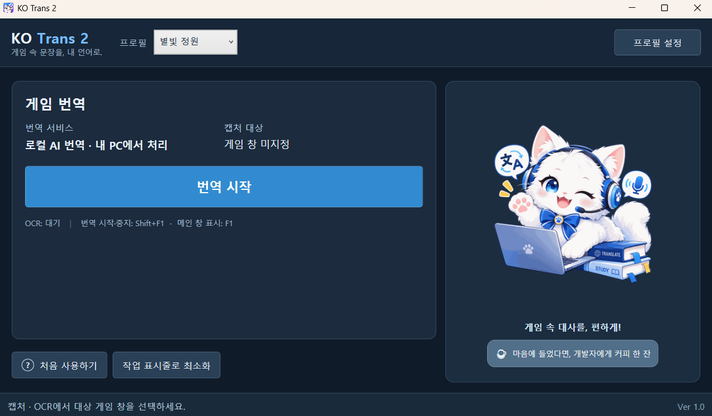

본문으로 건너뛰기
KO Trans 2 · 사용자 도움말
게임 대사를 한국어로 읽기
게임 창을 연결하고 대사 영역을 고르면, 원문과 한국어 번역을 게임 위 자막창에서 읽을 수 있습니다.
첫 번역 시작하기
처음 시작하기
설치부터 첫 한국어 자막까지
기능별 도움말
프로필, OCR, 번역 모델과 자막 설정
문제 해결
창 연결, 번역 지연, 단축키와 업데이트

메인 화면에서 프로필과 캡처 대상을 확인할 수 있습니다.
맨 위로 ↑
처음 시작하기 →
원본 크기
닫기